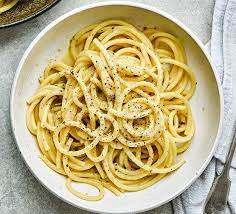

Cacio e Pepe

What you'll need:
- Six (6) ounces of spaghetti
- 3 Tbsp unsalted butter (section into three 1-ounce slices)
- 3/4 cup finely grated parmesan
- 1/3 cup finely grated pecorino romano
- Salt flakes and cracked pepper
Instructions
- Have all your ingredients ready.
- In a pot, bring 3 quarts of water to a boil. Season the water with salt.
- Add pasta and cook. Stirr occasionally.
- Melt 2 Tbsp of butter in another pot over medium heat. Add pepper and cook for 1 minute until toasted.
- Drain your pasta but keep 3/4 cup of this water as a reserve.
- Add 1/2 cup of your reserve water to a skillet. Bring to simmer and add both your pasta and remaining butter.
- Bring heat to low and add parmesan, stirring until melted and all the pasta is covered in sauce.
- Plate pasta and serve.
Link to original recipe